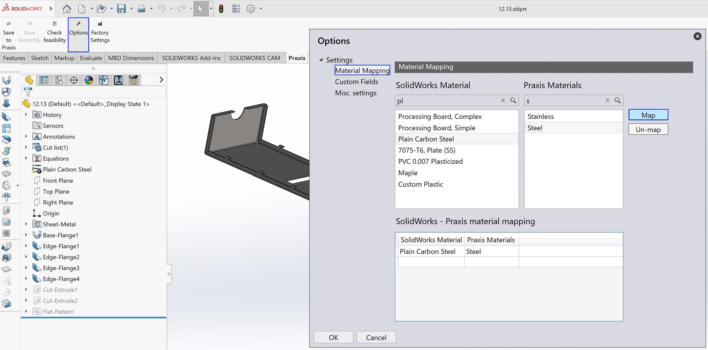

Parçaları kaydet
SolidWorks uygulamasını başlatın ve bir sac metal parçası (.sldprt) açın.
Ardından şu adımları izleyin:
-
TruSmartCAM araç çubuğuna erişmek için SolidWorks içinde TruSmartCAM sekmesine geçin.
-
TruSmartCAM araç çubuğunda Praxis’e kaydet seçeneğine tıklayın.
Praxis’e kaydet iletişim kutusunda, uygun TruSmartCAM ham malzemesini seçin, ardından parçayı TruSmartCAM parça kütüphanesine yüklemek ve kaydetmek için Tamam seçeneğine tıklayın.

Parça artık TruSmartCAM uygulamasına kaydedildi.

TruSmartCAM, C:\Program
Files\Metamation\ TruSmartCAM \Samples\Parts konumunda bulunan birkaç örnek parça içerir. Gerekirse test amacıyla kullanabilirsiniz.
|
Otomatik malzeme çözümlemesi
Bu özellik, yükleme sırasında SolidWorks malzemelerini ve parça kalınlık değerlerini otomatik olarak karşılık gelen TruSmartCAM ham malzemelerine dönüştürür.
Malzeme eşleştirmesini yapılandırmak için:
-
Seçenekler iletişim kutusunu açmak için TruSmartCAM araç çubuğunda Seçenekler seçeneğine tıklayın.

-
Malzeme Eşleştirme sayfasına gidin.
-
Sol bölmede bir SolidWorks malzemesi seçin.
-
Sağ bölmede karşılık gelen TruSmartCAM malzemesini seçin.
-
Eşleştirmeyi oluşturmak için Eşleştir seçeneğine tıklayın.
-
Eşleştirilmiş çift, alttaki eşleştirme listesinde görünür.
-
-
Bir eşleştirmeyi kaldırmak için seçin ve Eşleştirmeyi kaldır seçeneğine tıklayın.
Kalınlık tolerans ayarı
Kalınlık tolerans değeri, TruSmartCAM uygulamasının SolidWorks’ten gelen sac metal model kalınlığını TruSmartCAM veritabanındaki mevcut bir ham malzeme kalınlığıyla eşleştirdiği tolerans aralığını tanımlar. Model kalınlığındaki tasarım yuvarlaması, birim dönüşümleri vb. kaynaklı küçük varyasyonları telafi eder.
SolidWorks parça kalınlığı TruSmartCAM içindeki bir malzemeyle tam olarak eşleşmediğinde, tolerans değeri en yakın kullanılabilir malzemenin otomatik olarak seçilmesini sağlar.
Nominal 2,0 mm malzeme ve 0,05 mm tolerans değeri ile:
-
TruSmartCAM, 1,95 mm ile 2,05 mm arasındaki herhangi bir SolidWorks model kalınlığını geçerli bir eşleşme olarak kabul eder.
-
Bu aralığın dışındaki sapmalar, parça yükleme sırasında manuel malzeme seçim istemini tetikleyecektir.
Tolerans değerini görüntülemek veya değiştirmek için:
-
TruSmartCAM araç çubuğunda Seçenekler seçeneğine tıklayın ve ardından tolerans değerini görüntülemek için Çeşitli ayarlar bölümüne gidin, şimdi Praxis’e kaydet seçeneğine tıklayın.

-
Praxis’e kaydet iletişim kutusunda Tamam seçeneğine tıklayın, parça TruSmartCAM uygulamasına kaydedilecektir.

Özel parça özelliklerini okuma
Bu ayar, TruSmartCAM uygulamasının Malzeme, Revizyon ve diğer kullanıcı tanımlı nitelikler gibi özel parça bilgilerini doğrudan SolidWorks parça dosyalarından otomatik olarak okumasına olanak tanır.
Ayarlamak için:
-
Seçenekler iletişim kutusunu açmak için TruSmartCAM araç çubuğunda Seçenekler seçeneğine tıklayın ve ardından Özel Alanlar bölümüne gidin.

-
Gerekli TruSmartCAM alanlarını karşılık gelen SolidWorks Özel veya Konfigürasyon alanlarıyla ilişkilendirmek için Eşleştir ve Eşleştirmeyi kaldır düğmelerini kullanın.
| Görüntülenen değerler, o anda aktif olan SolidWorks parçasından yüklenir. |
-
Eşleştirme tamamlandıktan sonra, seçilen özel özellikler parçalar TruSmartCAM uygulamasına aktarıldığında veya güncellendiğinde SolidWorks’ten otomatik olarak okunacaktır, şimdi Praxis’e kaydet seçeneğine tıklayın.
| Burada tanımlanan eşleştirmeler TruSmartCAM deposunda kaydedilir ve ağ içindeki tüm TruSmartCAM SolidWorks kurulumlarında otomatik olarak senkronize edilir. |
-
Praxis’e kaydet iletişim kutusunda Tamam seçeneğine tıklayın, parça TruSmartCAM uygulamasına kaydedilecektir.